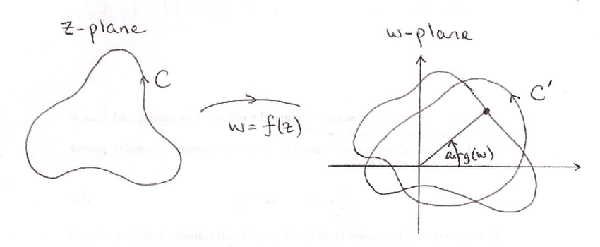

定理陈述
Stein的复分析 Chapter 3 Exercise 16的第二问用到了这个结论。
广义幅角原理指的是
$$
\frac{1}{2 \pi i} \oint_{C} g(z) \frac{f^{\prime}(z)}{f(z)} d z=\sum_{a} n(C, a) g(a)-\sum_{b} n(C, b) g(b)
$$
例如，如果 $f$ 是以一个简单围道 $C$ 内部 $z_1 ， \ldots, z_p$ 为零点的多项式，以及 $g(z)=z^k$ ，则
$$
\frac{1}{2 \pi i} \oint_C z^k \frac{f^{\prime}(z)}{f(z)} d z=z_1^k+z_2^k+\cdots+z_p^k
$$
是 $ f $ 的根的次方和对称多项式。
证明
考虑
$$
f(z)=\frac{\prod_{j=1}^n\left(z-z_j\right)}{\prod_{k=1}^m\left(z-p_k\right)} h(z)
$$
其中h是全纯函数，求对数导数有
$$
\frac{f^{\prime}(z)}{f(z)}=\sum_{j=1}^n \frac{1}{z-z_j}-\sum_{k=1}^m \frac{1}{z-p_k}+\frac{h^{\prime}(z)}{h(z)}
$$
乘上$ g(z) $ 后
$$
\begin{aligned}
g(z) \frac{f^{\prime}(z)}{f(z)}=&\sum_{j=1}^n \frac{g(z)}{z-z_j}-\sum_{k=1}^m \frac{g(z)}{z-p_k}+g(z) \frac{h^{\prime}(z)}{h(z)} \
=& \sum_{j=1}^n \frac{g\left(z_j\right)}{z-z_j}-\sum_{k=1}^m \frac{g\left(p_k\right)}{z-p_k}+\left(g(z) \frac{h^{\prime}(z)}{h(z)}+\sum_{j=1}^n \frac{g(z)-g\left(z_j\right)}{z-z_j}-\sum_{k=1}^m \frac{g(z)-g\left(p_k\right)}{z-p_k}\right)\
\end{aligned}
$$
括号里的项只有可去奇点，则
$$
g(z) \frac{f^{\prime}(z)}{f(z)}=\sum_{j=1}^n \frac{g\left(z_j\right)}{z-z_j}-\sum_{k=1}^m \frac{g\left(p_k\right)}{z-p_k}+\phi(z)
$$
其中$ \phi(z) $ 为全纯函数。
对上式apply Residue Theorem即得。
Geometric Picture of Argument Principle
关于幅角原理，我们从另一个角度看，取一个区域 $ \Omega $, 如果 $ f(z)=p $ 在这个区域上有零点，考虑 $ g(z)=f(z)-p $ 的零点数，即 $$
N(f(z)-p,\Omega)=\frac{1}{2\pi i}\int_{\partial \Omega}\mathrm{d} log(f(z)-p)=\frac{1}{2\pi }\int_{\partial \Omega}\mathrm{d} arg(log(f(z)-p))
$$
这就是f(z)环绕p的环绕数。如图所示

关于复分析里的习题，
- Suppose $f$ and $g$ are holomorphic in a region containing the disc $|z| \leq 1$. Suppose that $f$ has a simple zero at $z=0$ and vanishes nowhere else in $|z| \leq 1$. Let
$$
f_\epsilon(z)=f(z)+\epsilon g(z)
$$
Show that if $\epsilon$ is sufficiently small, then
(a) $f_\epsilon(z)$ has a unique zero in $|z| \leq 1$, and 16. Suppose $f$ and $g$ are ho Suppose that $f$ has a simple Let
(b) if $z_\epsilon$ is this zero, the mapping $\epsilon \mapsto z_\epsilon$ is continuous.
第二问只需要利用 广义幅角原理的推论即可证明。